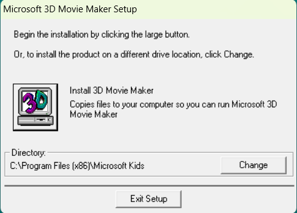
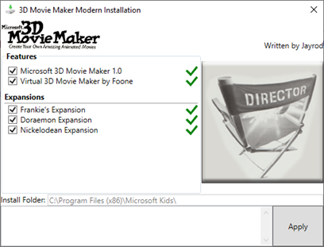

Useful 3DMM Downloadables
includes downloads for the program, patches and utilities
3DMM ISO
The original rip of the 3DMM Installation CD

3DMM Modern Installer
A modern installer perfect for newer machine
and also includes a bunch of expansions
